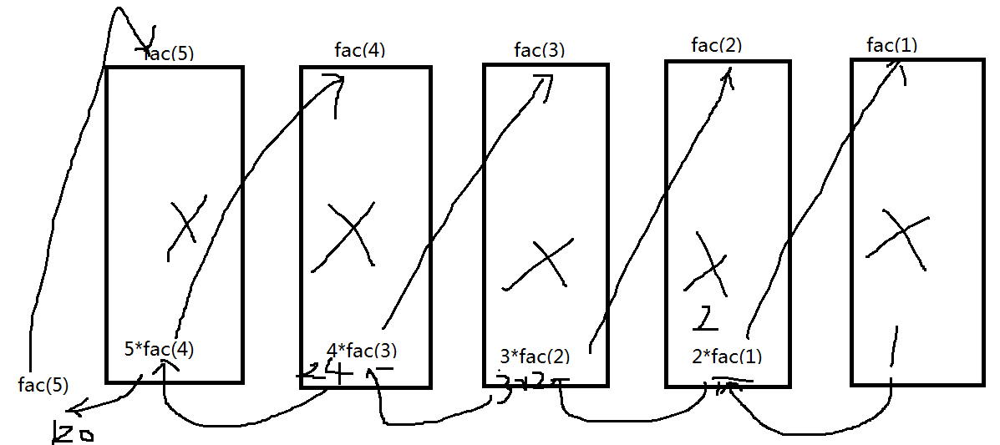

梳理知识点
1、arguments（了解）
arguments只能在函数体内部使用
arguments代表的是实参副本
arguments是一个对象
arguments中的值 可以通过下标取出 下标从0开始
2、变量的作用域
作用域 ： 作用范围
全局变量：
在函数外部定义的变量
在函数体内部没有var定义的变量（隐式全局变量）
全局变量的作用范围 ： 整个程序 从程序开始到结束 变量均有效
局部变量:
在函数体内部明确通过var定义的变量
局部变量的作用范围 就是函数体内部 函数调用完成后 变量自动就销毁
所有的形参都是局部变量
3、变量提升
在函数体内部定义的变量 会讲将变量提升到函数体内部的最顶端 只提升变量声明，不赋值
function fn(){
alert(a);
var a = 10;
} 等价于
function fn(){
alert(a);
4、函数的递归调用
递归调用 ： 函数自己调用自己
5！ = 5*4!
4! = 4 *3!
3! = 3 * 2!
2! = 2*1!
1! = 1
递归的本质：循环
function fac(n){ 任意一个数的阶乘 n 初始值
if( n==1 ){ 条件 终值
return 1;
}else{
return n*fac(n-1) n-1步长 n*fac(n-1) 反复执行的任务
}
}
递归实现过程：

5、同名函数
6、函数和事件的关系
事件 ：对元素的某种操作
函数和事件的关系 ： 所有的事件都会依赖函数执行
7、事件的三要素
事件源： 是一个名词
事件： 是一个动词
事件处理程序 ： 函数
oBtn 事件源
onclick 事件
function 事件处理程序
oBtn.onclick = function(){
}
8、事件种类
页面事件：
onload 页面加载事件 （页面打开后执行）
onunload 页面卸载事件（页面关闭时执行）
鼠标事件：
onclick 单击
ondblclick 双击
onmousedown 按下
onmouseup 抬起
onmouseover 移入
onmouseout 移出
onmouseenter 移入
onmouseleaver 移出
onmousemove 移动
oncontextmenu 右键单击
键盘事件：
onkeyup 抬起
onkeydown 按下
onkeypress 按下 + 抬起
其它事件（一般用于表单）
onsubmit 表单提交事件（一般用于表单验证）
onchange 改变 （一般用于下拉列表）
onblur 失去焦点
onfocus 获取焦点
事件应用 ：
事件源.事件 = function(){
}
9、如何操作页面元素
操作样式 ： 页面元素.style.样式 = 值
操作内容 ：
操作表单 ： 页面元素.value = 值 属性操作
操作非表单 ： 页面元素.innerHTML = 值
操作标签属性： <img src=''>
页面元素.属性 = 值